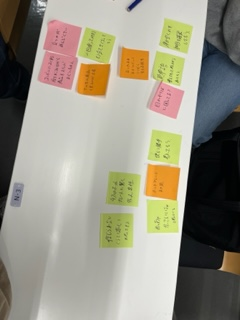
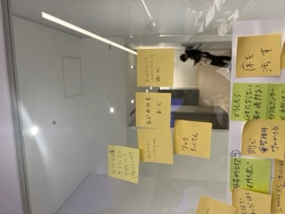
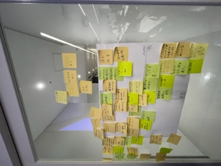
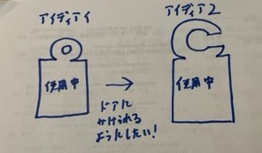
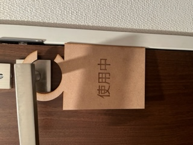
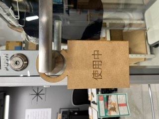
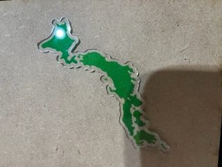

Design for Others
今回は日常でこれがあればいいなと思うものを作りました。
私達の班では、下の写真のような意見がでました
↓↓↓↓↓↓↓↓↓↓↓↓↓↓↓↓↓↓↓↓↓↓↓↓↓↓↓↓↓↓↓↓↓↓↓↓↓↓↓↓↓↓↓↓↓↓↓
 
私達の班は、その中で教室にフックがあればコートをかけられていいよねと言う話になって壁につけれるフックを作る床に始めしました。
しかし、真っ白の壁につけるのは大学の許可がでないと考えました。椅子のせにつけれるようにすればいいじゃんと言う話もしましたが、
次の案としてあがっていた大学の机にひじ掛けがあればいいよねと言う話になってひじ掛けにフックをつければいいのではないかと話会いました。
それから個人の作業になり、私的に設計図を書いてみましたがあまり言いアイディアが思いつかなかったので個人的にあれば便利と思う物を作りました。
それがトイレの個室を使っている時に中に入っているのかノックして確かめるのは自分的に恥ずかしので使っていることがわかるものがあればいいなと
考えました。そこでホテルとかで部屋の清掃中がわかるものをドアの前において置けばトイレも使っていることがわかると考えました。
アイディア
私の簡単なアイディアを絵に起こしてみました。

完成品
円にしかなったのでどんなトッテでもつけることができましす。また、木の素材がよかったのでMDFを使いました。

感想
今回は自分でこれがあれば良いなと思う物を作りました。自分では、あまり時間がなくて妥協したところもあるので次の課題の時は、
もっと時間をかけて細かいところまでこだわりたいです。また、班で考えたものが作れなかったのでそれも時間がある時に作りたいです。
おまけ
トイレと言えば日本地図ということで、レーザーカッターとUVプリンターを使って日本地図をおまけで作って見ました。
